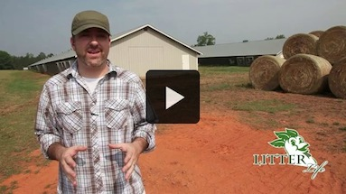

- Non Corrosive
- Keeps Litter DRY!
- Has shown to;
- Reduce mortality rate by 1 to 3%
- Help birds maintain body heat
- Help eliminate litter bugs
- Reduce condemnation rate by 246 to 489%
- Increase feed conversion rate by 11 to 16%
- Increase average flock weight by 3 to 4%
- Binds Ammonia
- Produces clean air
- Lowers propane costs
- Lowers exhaust fan associated costs
- Reduces "caking" in litter
- Non-toxic
- Convenient liquid form.
- Simple to apply…average of 10 to 12 minutes per 20,000 square ft. house.
- Applied with conventional liquid spray equipment.
- Amazing odor abatement qualities
- Less shavings required
